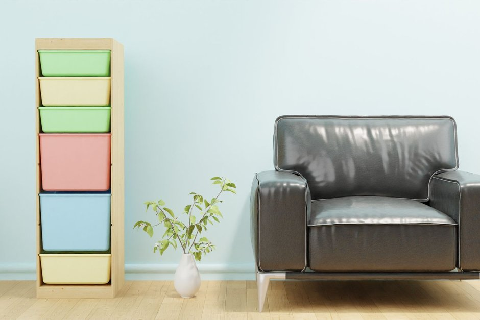

Organizing Small Spaces with Multi-Function Storage Boxes

Photo: dada _design / Pexels
Living in a small space can be a challenge, but with the right tools, you can maximize your storage and keep your living area looking tidy. Multi-function storage boxes are a game-changer for those with limited space. Here’s how to use them effectively to keep your area organized and clutter-free.
Assess Your Space
Before you start buying boxes, measure your available space. For example, if you have a 4-foot by 6-foot closet, you can calculate the square footage and determine how many boxes you need. A 24 square foot closet might hold 12 medium-sized storage boxes.
Choose the Right Boxes
Photo: Tima Miroshnichenko / Pexels
Select storage boxes that match your needs. For instance, if you need to store seasonal clothing, consider boxes with clear lids so you can see what’s inside. For smaller items like electronics or craft supplies, opt for small boxes with tight-fitting lids to prevent dust and moisture.
Utilize Vertical Space
Install shelves or hanging organizers to make use of vertical space. For example, hang a tall shelf in your closet and place your multi-function storage boxes on it. This can double or even triple your storage capacity.
Organize by Category
Group similar items together. For instance, keep all your kitchen gadgets in one box and all your office supplies in another. This makes it easier to find what you need and keeps everything in its designated spot.
Label Everything
Use labels to identify what’s inside each box. For example, label a box with "summer clothes" or "office supplies." Place the label on the outside of the box so you can quickly identify what you need.
Rotate Seasonal Items
Use multi-function storage boxes to store seasonal items. For example, in the fall, use a box to store all your summer beach towels and swimsuits. This keeps your living space free of unnecessary items throughout the year.
Keep It Accessible
Ensure that the boxes are easy to access. Place frequently used items in boxes that are easily reachable, while less frequently used items can be stored higher up.
Example Scenario
Imagine you have a small guest room that doubles as a home office. You can use a multi-function storage box to store office supplies like printer paper, pens, and files. Another box can hold books and magazines. Use a clear lid to see what’s inside and label each box with its contents. Install a shelf to hold the boxes vertically, maximizing the space.
Conclusion
Multi-function storage boxes are a versatile and effective solution for organizing small spaces. By measuring your space, choosing the right boxes, utilizing vertical space, organizing by category, labeling everything, rotating seasonal items, and keeping it accessible, you can create a clutter-free and efficient living environment.
Recommended products
As an Amazon Associate, I earn from qualifying purchases.